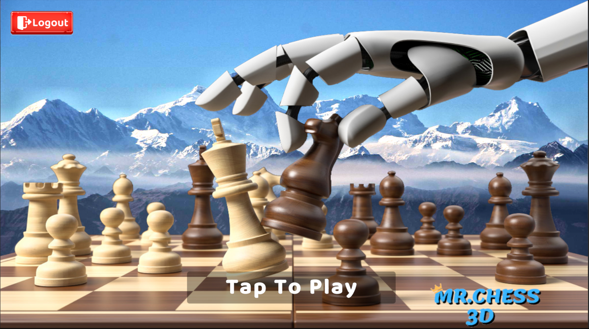
Mr. Chess 3D is a Strategy/Board game that combines authentic chess rules with modern multiplayer, social features, and experimental gameplay modes.
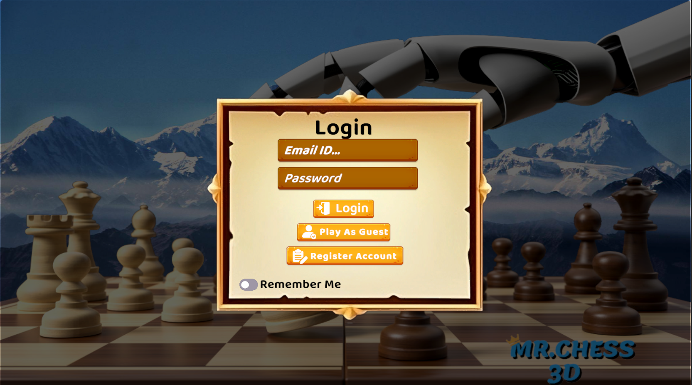
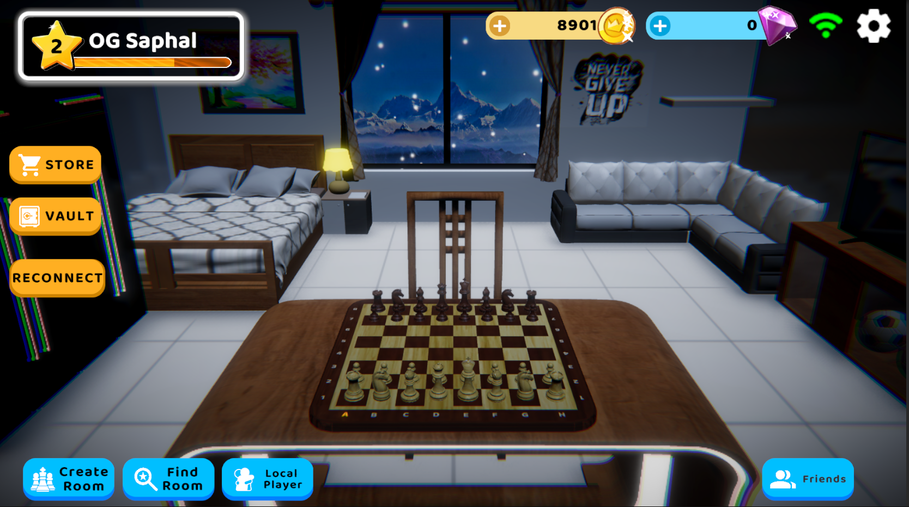
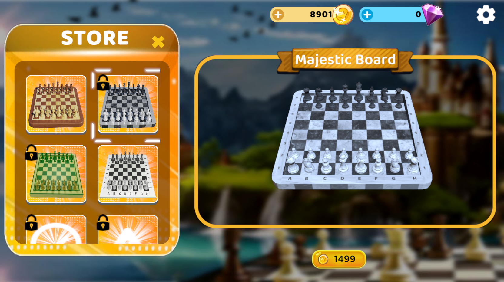
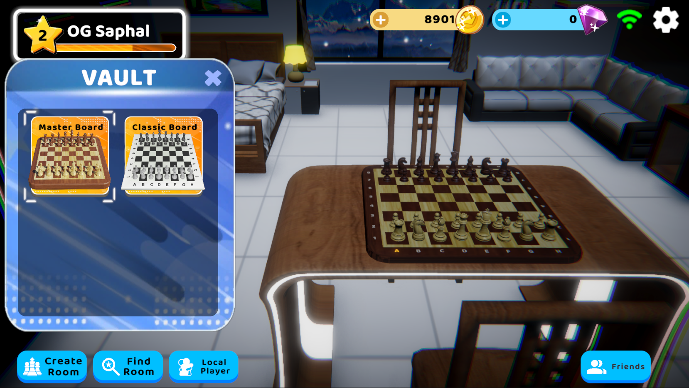
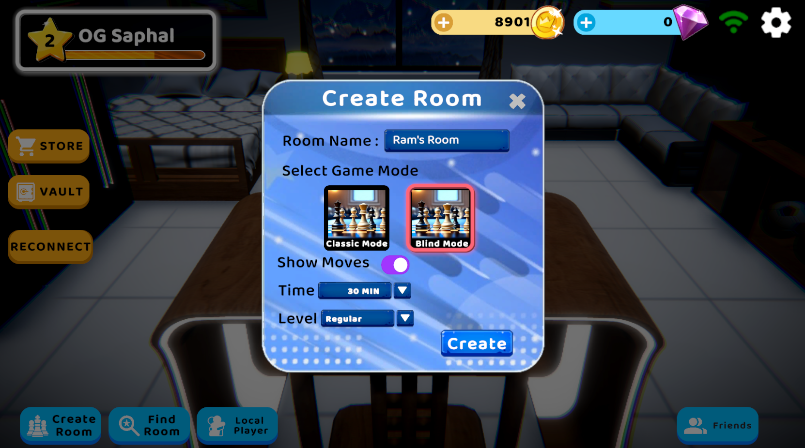
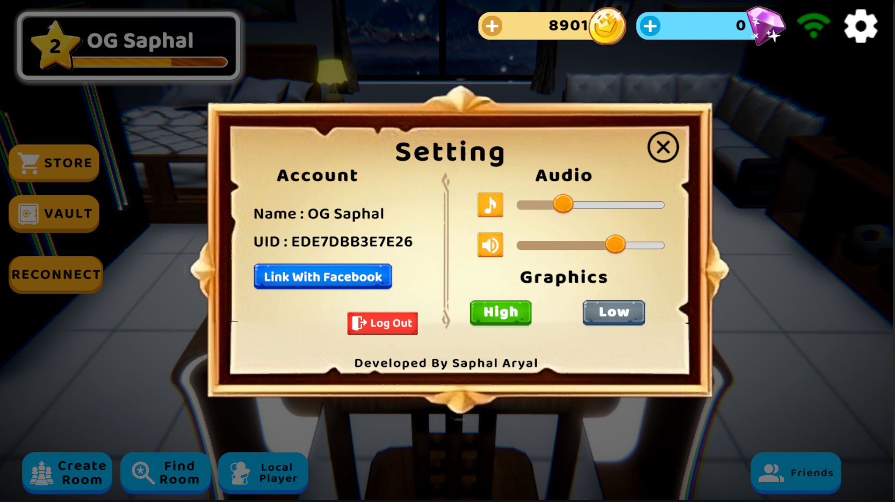
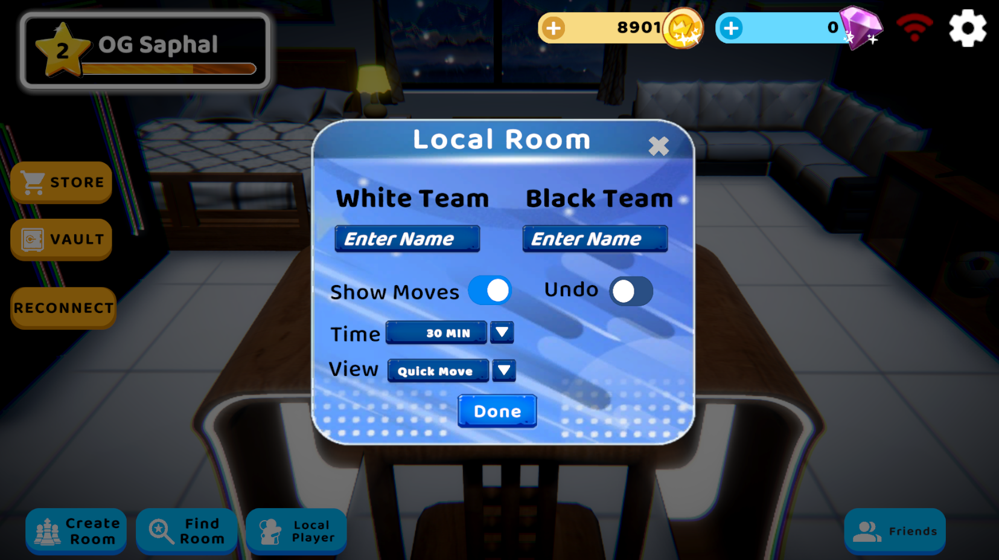
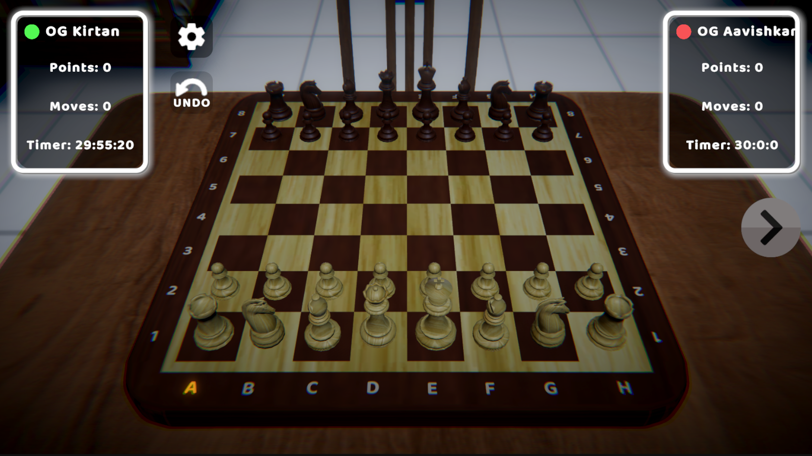
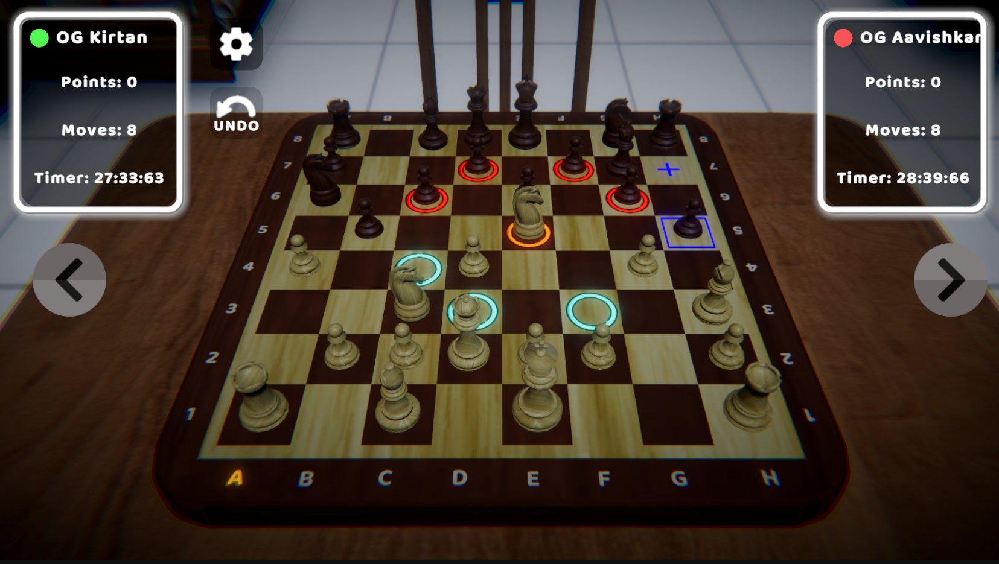
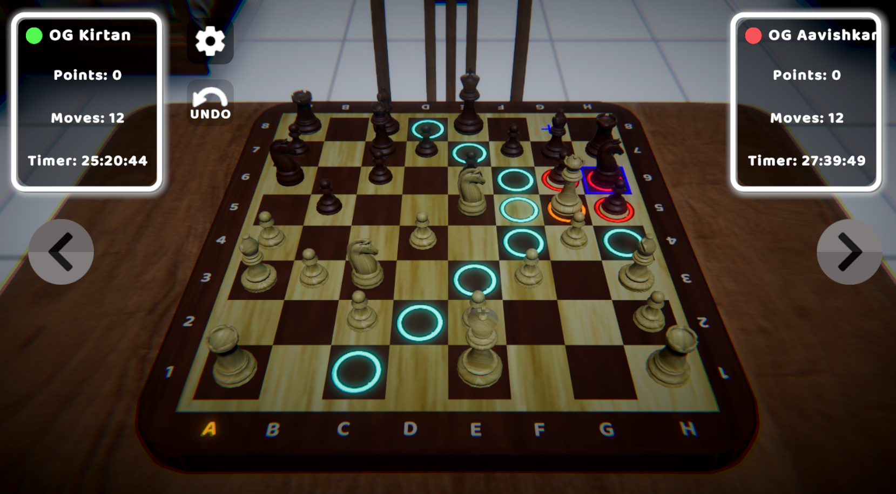
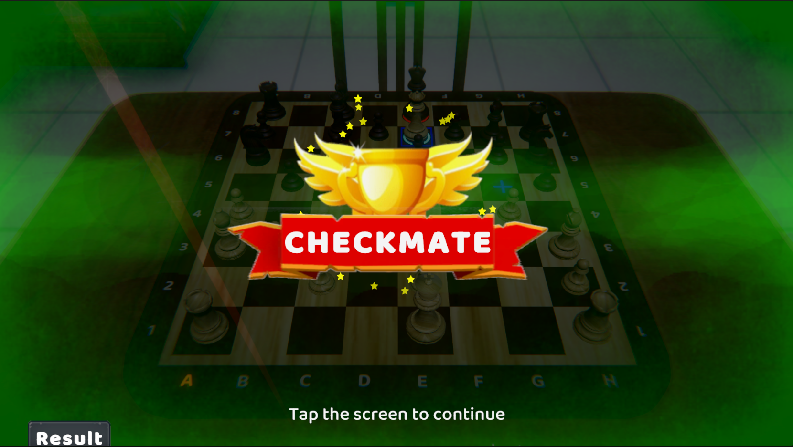
Defeat the opponent by delivering checkmate under standard chess rules.
Match Type:
Lobby Features:
Networking Focus:
Concept:
Blind Chess challenges players to rely on memory, prediction, and strategic awareness rather than full board visibility.
Visibility Rule:
Design Intent:
Mr. Chess 3D combines classic gameplay, modern multiplayer infrastructure, and innovative rule-based experimentation.